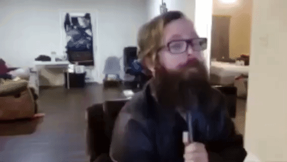

it's currently 5:16 pm, i dread night coming because i know i'll have ot head to work in the morning. the main reason i started this blog was because my therapist told me i should keep a journal because i told her i didn't understand myself, so i started this. rn i feel like shit and i want to die, but it will be fine in the end. every thursday and friday feels like torment, i hate working this job, i hate that i havent become what i set out to be yet, it's taking so long and i wont give up but shit it's draining..
i found this gif today on 4chan, i know the story behind it but i never saw the actual footage, this is the part where he kills himself in a gif.

it's a sad thing, i'd never commit suicide but sometimes this shit dont seem worth it, maybe im just speaking out of emotion and bitching idfk, we pushing forward boys we all gonna make it, long road ahead.
anyway imma try and make this a long one cause why not, i have nothing much else today and this day seems lazy as fuck anyway. today i been talking to this lady on tinder she seem cool. although i know right now in my life a relationship is more of a liability than a plus, i'm mainly just using it for entertainmentlol. though it is entertaining, it feels depressing as shit just scrolling, that's why i hate using tik tok but i get caught in the trap over and over and over again. it seems to never end, addiction, cycle, work, consume, it just seems to never end every day is another test. i don't know how to feel mentally atp, maybe im being dramatic, idk.
none of this seems to corelate lol, i guess im just having fun, idek what to really say here.. i started a new account on instagram if none of you have noticed yet, it's called @_zygoteweb. i'm mainly using it to draw and post whatever i want, at least one post a day but i end up drawing multiple times out of the day for this, it's honestly rlly refreshing and fun. i'm doing a lot, got a lot of different people i'm working with, making an album, it's cool asf (still angry and on the verse of losing it though.) anyway, i'm gonna end it here i have another one i want to write so i'll call this Wrath Pt.1.